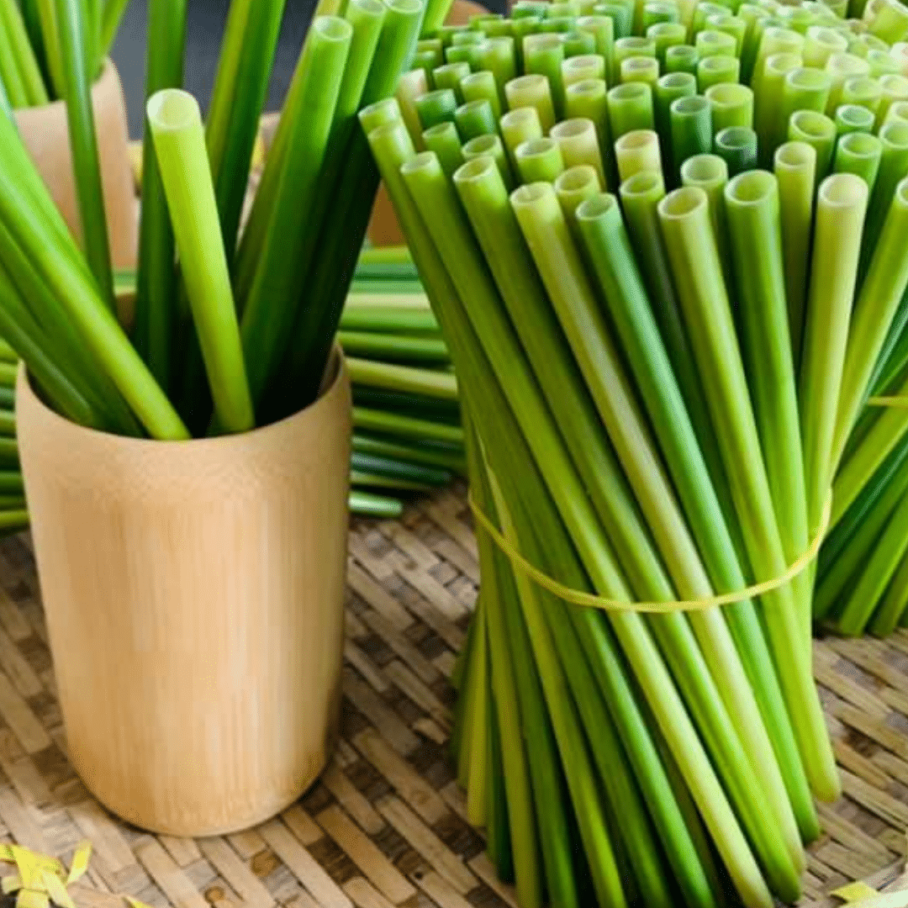

Blogs
Bài Viết Mới Nhất
Khám phá những ý tưởng mới, giải pháp xanh và hành trình sáng tạo từ thiên nhiên cùng FOLIA.

Quy trình xử lý sợi lục bình
Quy trình xử lý sợi lục bình gồm các bước: thu hoạch, sơ chế...
Tìm hiểu thêm
Quy trình xử lý sợi chuối
Quy trình xử lý sợi chuối gồm các bước chính: thu hoạch thân chuối, tách sợi...
Tìm hiểu thêm →

Quy trình xử lý sợi cỏ bàng
Quy trình xử lý sợi cỏ bàng gồm thu hoạch và sơ lý nguyên liệu...
Tìm hiểu thêm →